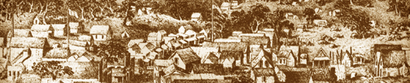
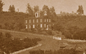
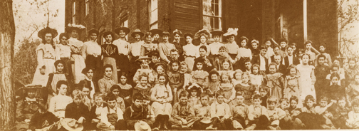

COLUMBIA SCHOOLS.
(& KNOWN TEACHERS.)
Since 1850

Columbia 1852

1850 The earliest schools were private and usually run by volunteer teachers in whatever available space allowed. This is a partial list of the known teachers and where they taught (if known). Also some of the research compiled on the subject as noted.
1852 BETSY HALEY first private school teacher.
1852 G.M. LANDERS private school teacher.
1853 November 1 - The first state school funds are to be paid out to districts which send in a census list of children.
1853 August or September - the Methodist Church South started the first school in Columbia. Mrs. Susan G. Chamberlain was the first school teacher. (Her husband Charles H. Chamberlain was President of the Miners of the Columbia Mining District.)
1853 December - Dr. George A. Field (county assessor and ex-officio county Superintendent of schools) drops dead and the list isn't sent on time. Because of the delay non-white children were allowed to attend public schools.
1855 January - County rec'd the first of state funds.
1855 ELLEN SEARS teacher.
mid1850's MRS. JOHN LEARY teacher.
mid1850's ADELAIDE CORY teacher.
mid1850's CLEMENTINE BRAINARD Sunday school teacher.
1855 LORI NELSON Porterfield's Private School teacher.
1856 - 1867 MRS. ANN CARR DEALY private school teacher.
mid1850's S.S. HARMON Private School teacher.

School House 1860s viewed from town.
1860 An act written this year dropped the provision for special schools for the non-white, and left them with no provision for an education.
1861 Miss McDONALD first teacher in Columbia Elementary.
1863 April - John Swett as Superintendant of Public Eduction passed an act that provided for non-white children to attend public schools.
1863 NELLIE BROWN opened private school.
1864 MARION HELEN BROWNE was a local school teacher.
1864 - 1866 MISS BABCOCK was a local school teacher.
1864 September 10 - Listed in the newspaper were "99 Indian, 13 Mongolian and 30 negroe children in attendance, or 142 non-whites out of 916 on the school registers." - Tuolumne Courier
1865 MISS O'BYRNE teacher at St. Anne's .
My School Days
1865 - "When I was about eight years old, I was sent to a private school. I knew all my letters, and could spell a good many words, and read quite well.
"When I went to school, the teacher put me into the second Reader. I got along very well indeed; and remained at that school for over two years. This was in a place called Columbia, in Toulumne County." - from the journal of a 13 year old Anna Maria Bonnell dated 25 July 1870. Born in Columbia 23 May 1857. She was the daughter of John T. Bonnell.
1865 MARY ANN COSTELLO teacher at St. Anne's.
1865 MRS. ABBIE SLACK was a local school teacher.
1865 - 1869 MISS POWERS was a local school teacher.
1866 All non-whites allowed in school with no restrictions.
1866 - 1867 ROSE OWENS was a local school teacher.
1860's MISS FLASKS was a local school teacher.
1860's M. L. FULLER was a local school teacher.
1867 MARTHA ARRON took over Miss Carr's private school.
1867 MAGGIE DONOVAN was a local school teacher.
1867 MARY MURPHY teacher at St. Anne's.
1867 MARY BRENNAN teacher at St. Anne's.
1867 MARY HARP teacher at St. Anne's.
1868 ESTELLE BULLENE owned and operated private school on Silver Street.
1869 EMMA REUTER was a local school teacher.
1871 - 1887 MARY MURRAY was a local school teacher.
1872 FLORA BURNS was a local school teacher.
1872 - 1878 ANNIE LUDDY was a local school teacher.
1872 - 1878 MAGGIE O'HARA was a local school teacher.
1872 - 1878 ANNIE REHM was a local school teacher.
1873 - 1875 SARAH GIBBONS was a local school teacher.
1874 - 1876 MAY MANSFIELD was a local school teacher.
1874 - 1876 ANNIE ELOISE MARTIN was a local school teacher ("2nd Assistant" school teacher).
1874 - 1875 ROSANA GRAYSON was a local school teacher.
1877 SADIE HARTLEY was a local school teacher.
1880 ROSE E. MORGAN was a local school teacher. (1880 census shows her as 31 and born in Australia)
1880 GEORGE P. MORGAN was a local school teacher.(1880 census shows him as 21 and born in California)
(NOTE: The Morgans above are siblings and children of George Morgan of the Morgan Hotel)
1880 JESSIE M. STEWART was a local school teacher.(1880 census shows her as 22 and born in California)
c1883 At the election held in Columbia, on Saturday last, for School Trustees, 181 votes were cast, as follows: - Antone Siebert 166, Donald McKenzie 177, P.B. Bacon 15, G. (Gideon) Wing 2. A. Siebert is elected for three years, and D. McKenzie, to fill vacancy caused by the death of D. Frazer, one year. Wm. Mansfield is Clerk of the Board of Trustees. (From an unknown newspaper clipping c1883).
1885 LAURA SELL was a local school teacher.
1885 NELLIE SHINE was a local school teacher.
1887 - 1889 LIZZIE McKENZIE was a local school teacher.
1890 - 1898 JULIA CONLIN was a local school teacher. Her class - 1890
1899 - 1918 ANTIONETTE S. (NETTIE) SIEBERT was a local school teacher. (1900 census shows her born January 1874 in California)
1908 - 1911 FANNY YANCEY was a local school teacher.

Columbia school children of 1910.
1913 - 1920 ALMA ROTHER was a local school teacher.
1917 PHOEBE SMYTHE was a local school teacher.
1917 KATE SEVERIE was a local school teacher.
1918 ROSE BELL was a local school teacher.
1919 - 1920 FANNIE AGAASE was a local school teacher.
1919 - 1920 HELEN GRAYSON was a local school teacher.
1919 - 1923 SADIE WASHBURN was a local school teacher.
1922 - 1938 ELNA PETERSON was a local school teacher.
1925 - 1928 JUANITA McMAHAN was a local school teacher.
1935 HELEN ITEY (IITTI)WALLEN was a local school teacher. Born in Stockton c1916. Married Athur Wallen.
1936 - 1938 MRS. A. B. MANN was a local school teacher.
1936 - 1939 LENA GHIORSO was a local school teacher.
1972 - 1978 SARAH PEABODY was a local school teacher.
NOTE ABOUT TEACHERS:
The list above is partial and may not be completely acurate.
These are names found in two locations from research in the CSHP archives.
I welcome any input, images, etc. that may enhance this page.

This page is created for the benefit of the public by
Floyd D. P. Øydegaard
Email contact:
fdpoyde3 (at) Yahoo (dot) com
A WORK IN PROGRESS,
created for the visitors to the Columbia State Historic park.
© Columbia State Historic Park & Floyd D. P. Øydegaard.